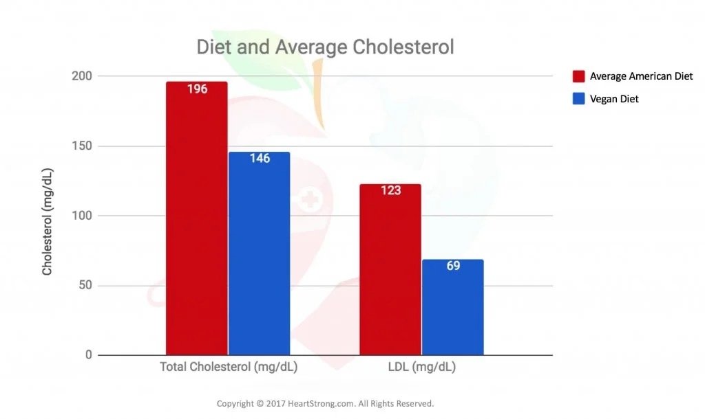

Factores de mortalidad ligados a la alimentaci√≥n ü•ó
Según un estudio basándose en las estadísticas globales de mortalidad de 195 países entre 1990 y 2017 los cinco factores alimentarios que más disminuyen la esperanza de vida tanto en Europa como globalmente son:
- Dieta baja en cereales integrales
- Dieta alta en sodio
- Dieta baja en frutas
- Dieta baja en frutos secos
- Dieta baja en verduras
Según un estudio llevado a cabo con 6381 personas, la prevalencia de cáncer es hasta cuatro veces superior en personas con dietas altas en proteína animal (más del 20% de las calorías diarias) con respecto a personas con dietas bajas en proteína animal (menos del 10% de las calorías diarias). No se observó los mismos efectos con altos niveles de proteína vegetal.

Una dieta vegetal está asociada con niveles más bajos de colesterol y triglicéridos en comparación con una dieta omnívora.
Mayor esperanza de vida 
Un estudio realizado en California entre los años 2002 y 2007 con 96000 participantes encontró que la esperanza de vida media de los hombres siguiendo una dieta 100% vegetal era 9.5 años superior a la de los hombres con una dieta omnívora (83.3 vs 73.8 años)(5.) La diferencia fue un poco menos notable en las mujeres participantes, con una esperanza de vida 6.1 años superior en aquellas que seguían una dieta vegetal (85.7 vs 79.6 años).
Usando datos del mismo estudio, se analizó la ingesta proteica de personas con dietas omnívora, vegetariana y vegana, encontrando valores parecidos en las tres: 74.7, 70.6 y 70.7 gramos diarios, respectivamente. En los tres casos se supera ampliamente la cantidad diaria recomendada de 46 g para una mujer media y 56 g para un hombre medio, desmintiendo la creencia generalizada de que las dietas de base vegetal no aportan suficiente proteína.
Por otro lado, un 70.6% de los omnívoros tenía un Índice de Masa Corporal por encima de 25, el considerado umbral del sobrepeso, en comparación con un 49.7% de los vegetarianos y sólo un 33.1% de los veganos.
Una alimentación para cualquier etapa de la vida 
La Academia de Nutrición y Dietética de Estados Unidos, la organización con más nutricionistas profesionales del mundo, afirma que las dietas 100% vegetales son adecuadas para cualquier etapa de la vida, incluyendo la infantez y el embarazo. Por otro lado, The American Journal of Cardiology recomienda una dieta 100% vegetal para prevenir la arterosclerosis y disminuir el riesgo de sufrir cáncer y otras enfermedades crónicas.
Fuentes üî§
1.Health effects of dietary risks in 195 countries, 1990-2017: a systematic analysis for the Global Burden of Disease Study 2017- Afshin et al, 2019
2.Low Protein Intake Is Associated with a Major Reduction in IGF-1, Cancer, and Overall Mortality in the 65 and Younger but Not Older Population- Levine et al. 2014
3.Vegetarian Diet and Cholesterol and Triglycerides Levels- De Biase et al, 2005
4.The Garden of Eden—plant based diets, the genetic drive to conserve cholesterol and its implications for heart disease in the 21st century- Jenkins et al, 2002
5.Vegetarian diets in the Adventist Health Study 2: a review of initial published findings- Orlich et al, 2014
6.Nutrient Profiles of Vegetarian and Non Vegetarian Dietary Patterns- Rizzo et al, 2014
7.Position of the Academy of Nutrition and Dietetics: Vegetarian Diets- Academy of Nutrition and Dietetics, 2016
8.Introduction: More Than Coronary Artery Disease- Esselstyn et al, 1998
Para saber m√°s üîç
- Breve guía de introducción a la alimentación vegetal
- Canal de YouTube de:NutritionFacts.org
- Comer para no morir
- How not to diet
- Becoming Vegan